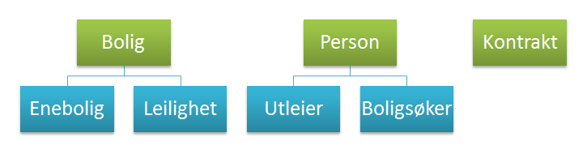
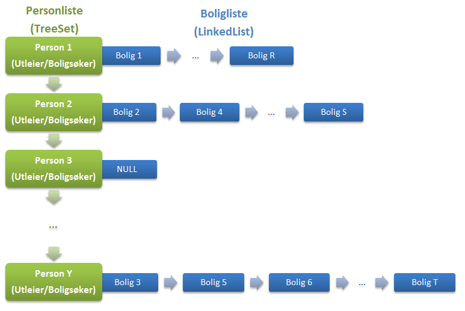
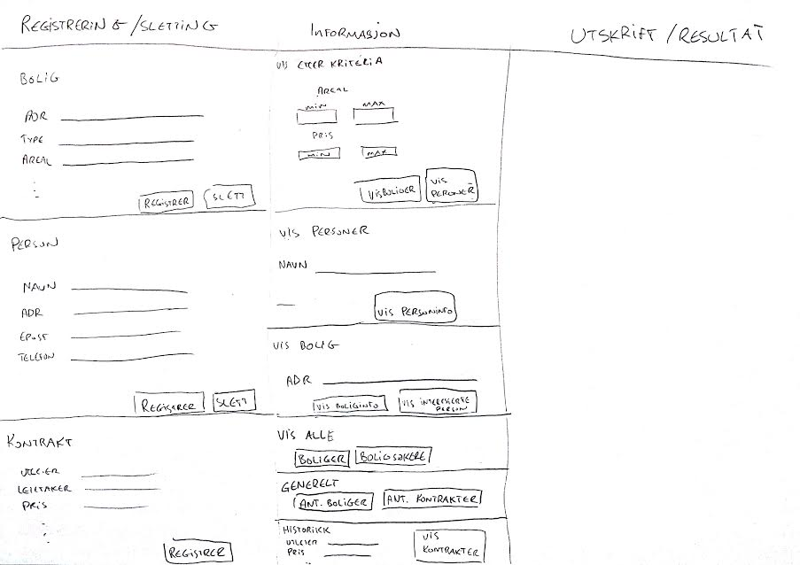
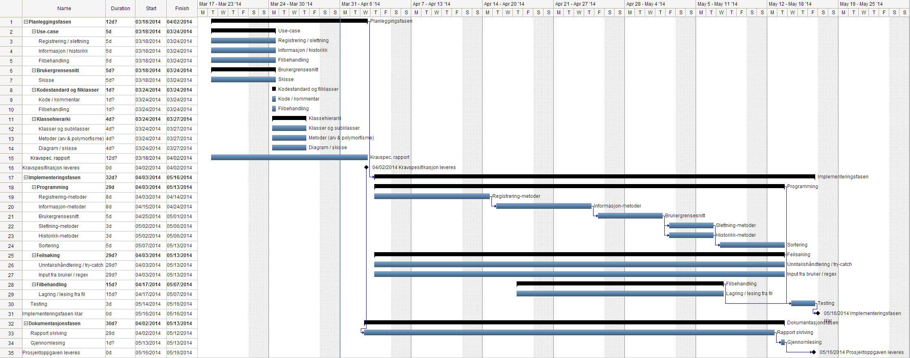

Funksjonalitet/UseCase
Registrering
- Registrere person (navn, adresse, e-post, tlf)
- Utleier (firma, boligliste)
- Boligsøker (personlige opplysninger, krav til boligen, krav til pris)
- Registrere boliger (adresse, type, areal, ant. rom, byggeår, beskrivelse, utleiepris, annonsedato, bilde)
- Enebolig/Rekkehus (ant. Etasjer, kjeller?, tomteareal)
- Leilighet (etasje, heis?, balkong?, diverse)
- Registrere leiekontrakter (utleieboligen, utleier, leietaker, leiepris, varighet) - historikk
- Sletting av boliger
- Sletting av person
Hente ut opplysninger
Om boliger
- Opplysninger om bolig på gitt adresse
- Opplysninger om boliger etter:
- Boligtype
- Boareal
- Antall rom
- Utleiepris
- Utskrift med opplysninger om alle boliger i utleieregisteret
- Sortering
Om personer
- Opplysninger om en navngitt person
- Hvilke personer som har meldt interesse om en bolig
- Utskrift av alle registrerte boligsøkere, med opplysninger om bolig de evt. er interessert i.
- Sortering
Generelt
- Antall boliger firmaet har for utleie
- Antall leiekontrakter firmaet har formidlet
Historikk
- Oversikt over alle inngåtte leiekontrakter
- Søke blant disse
Filbehandling
- Skrive data til fil
- Lese data fra fil
Prioriteringsrekkefølge
- Må kunne registrere alle objekter og skrive ut alt slik at man får verifisert at informasjonen er blitt lagret. Kunne matche boligsøkere med boliger. Lage enkelt, fungerende brukergrensesnitt(flowlayout). Fungerende skriving/lesing fra fil.
- Sletting. Utbedre brukergrensesnitt, utseende og funksjon(mer avansert layout). Vise leiekontrakt-hitorikk. Vise antall boliger for utleie og antall kontrakter som har blitt formidlet. Legge data inn i programmet (for sensor). Behandle brukerinput (regex, feilhåndtering).
- Sortering. Siste finish layout. Søke i historikk for leiekontrakter utifra kriterier.
(3. Prioritet er kun hvis tid)
Oppbygning av programmet
Klassehierarki
Vi har tre klasser som utgjør objektene som brukes i programmet, dvs. person, bolig og kontrakt. Person-klassen har to subklasser, utleiere og boligsøkere. Bolig-klassen har også to subklasser, enebolig og leilighet.
Datastruktur
Objektene lagres i en datastruktur, dvs. Person-objektene lagres i en TreeSet-mengde og hvert Utleier-objekt innholder en LinkedList-liste over alle boliger vedkommende er knyttet til. Vi valgte TreeSet datastrukturen for Personer fordi det hindrer dobbeltlagring og er sortert (f.eks. mht. personens navn). Vi valgte LinkedList datastrukturen for Boligene fordi den er effektiv når man skal sette inn og fjerne objekter, som er en stor del av vår program.
Kontrakt-objektene lagres i en ArrayList-liste fordi der er effektivt å søke gjennom og hente ut data (bruke indekser). Samtidig skal vi heller ikke fjerne noe fra listen.
Brukergrensesnitt
Klasser
Her er klassene vi foreløpig har bestemt oss for, men vi vil antageligvis måtte programmere noen flere.
- Person
- Utleier
- Boligsøker
- Bolig
- Enebolig
- Leilighet
- Kontrakt
- Kontraktliste
- Boligformidleren (main)
- Personliste
- Boligliste
- Vindusklasser
Planlegging
Fremdriftsplan
Arbeidsfordeling
Vi har planlagt at dele opp prosjektet mest mulig. Først må vi få alt i 1. prioritet til å fungere som krever mye samarbeid. Når 1. prioritet er klar, kan vi dele opp alt som ligger i 2. prioritet og deretter 3. prioritet på følgende måte:
- Sigurd: dokumentasjon, brukergrensesnitt, input fra bruker/regex, testing
- Eivind: registrerings- og informasjonsmetoder, brukergrensesnitt, filbehandling
- Gretar: registrerings- og informasjonsmetoder, slettningsmetoder, historikk
Verktøy
Vi bruker NetBeans for programmering av java koden og GitHub for å holde mest mulig rede på og oversikt over koden.
Systemkrav til maskinen er den samme som vi har i lab-timene.
Java versjon 7 skal brukes for dette prosjektet.